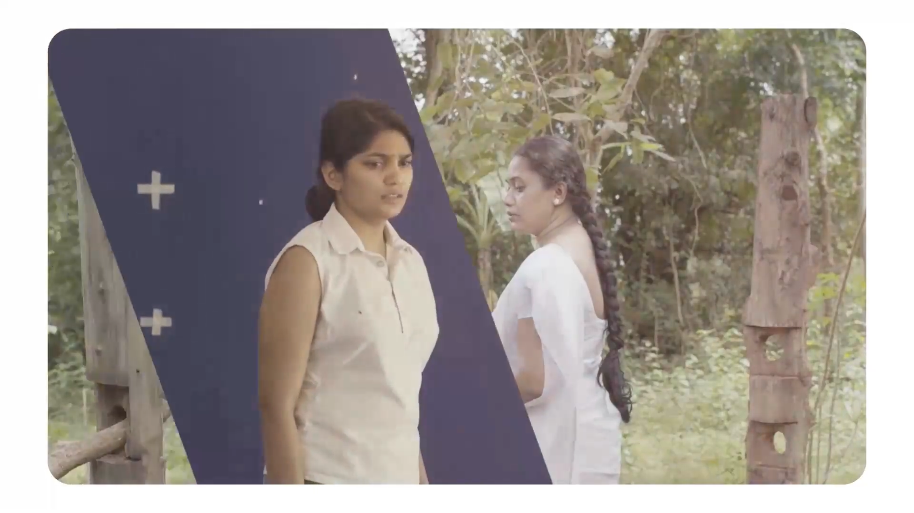
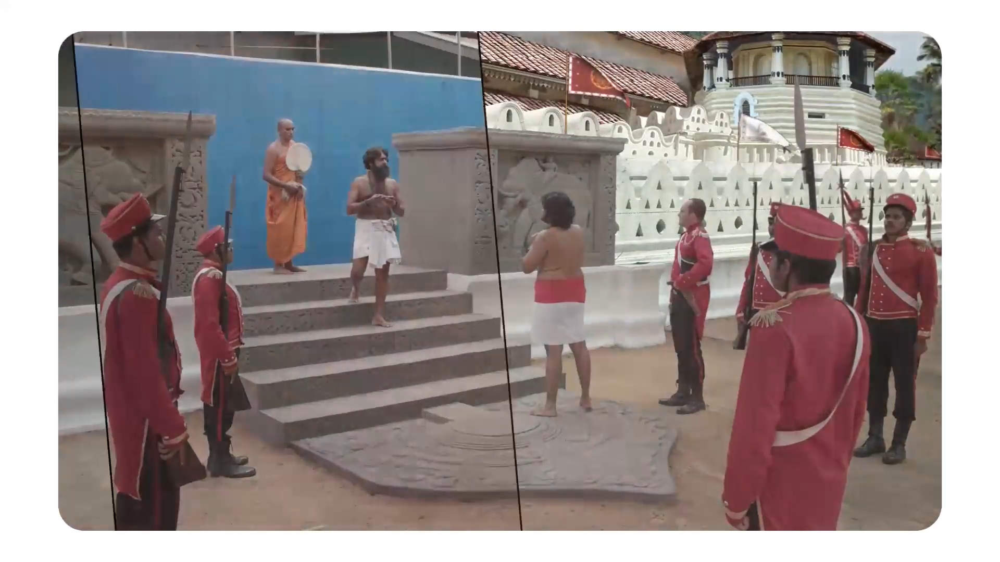

COMPOSITING
SERVICE 03
VFX, compositing and finishing for cinematic visuals — from digital environments and set extensions to seamless live-action integration.
View VFX Work ↓ABOUT THIS SERVICE
WonderLab combines production experience with post-production craft to build shots that feel natural, cinematic and finished — whether the work starts on location, on a green screen or entirely inside a digital environment.
SELECTED VFX WORK


READY TO CREATE?
Tell us about your project and we'll shape the right creative production approach for your brand.